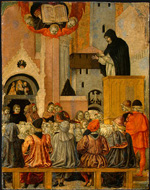

|  |
|---|
[91879] Tria retinent, pars 1 Tria retinent pigros in pigricia sua ne surgant. Timor pusillanimitatis. Prou.: dicit piger: leo est in uia; hoc dicit piger quando uidet aliquam asperitatem, credens se statim deficere si illam sustineret; leena est in itineribus, id est, dicit eciam: fragilis sum, non possum sustinere. Sed talibus dicitur Prou. XXIIII: usquequo, piger, dormis? Surge audacter quia dicitur in Iob: rugitus leonis et uox leene contrita est, et cetera. Rugitus leonis, id est, diabolus, deuictus est, unde in Io.: confidite, ego uici mundum; leena eciam, id est omnis fragilitas, deponenda est quia contrita est per uirtutem crucis, unde Apostolus: vetus homo noster crucifixus est.
[91880] Tria retinent, pars 2 Secundum quod retinet est amor, qui duplex est, scilicet amor proprietatis suorum exteriorum. Prou.: sicut ostium uertitur in cardine suo, et tamen non mouetur, a cardine scilicet, ita piger in lectulo suo, id est in diuiciis ubi ad modum lecti requiescit; per predicatores uertitur sed non mouetur. Alius amor est proprii corporis. Nolunt enim asperitates aliquas sustinere. Prou.: ascondit, piger scilicet, sub assellas manus suas et laborat si ad os suum conuertit eas. Contra quos dixit Apostolus: hora est iam nos de sompno surgere, et alibi: Karitas Christi urget nos.
[91881] Tria retinent, pars 3 Alii enuie in sua pigricia detinentur quibus uidentur sua bona sufficere. Talis erat ille diues qui dicebat: anima mea multa bona, id est uirtutes, habes reposita in annos plurimos, requiesce; non surgas cum aliis ad matutinas. Sed ei dictum: stulte, hac nocte, et cetera. Ab hoc errore reuocat scriptura illuminans intellectum, in Ps.: Emitte lucem tuam et ueritatem tuam; ipsa me deduxerunt, non requiescere fecerunt.
[91882] Tria retinent, pars 3 nota 1 Suple que dicit Salomon: Quecumque potest manus tua.
[91883] Tria retinent, pars 3 nota 2 Efe. VI: surge qui dormis.